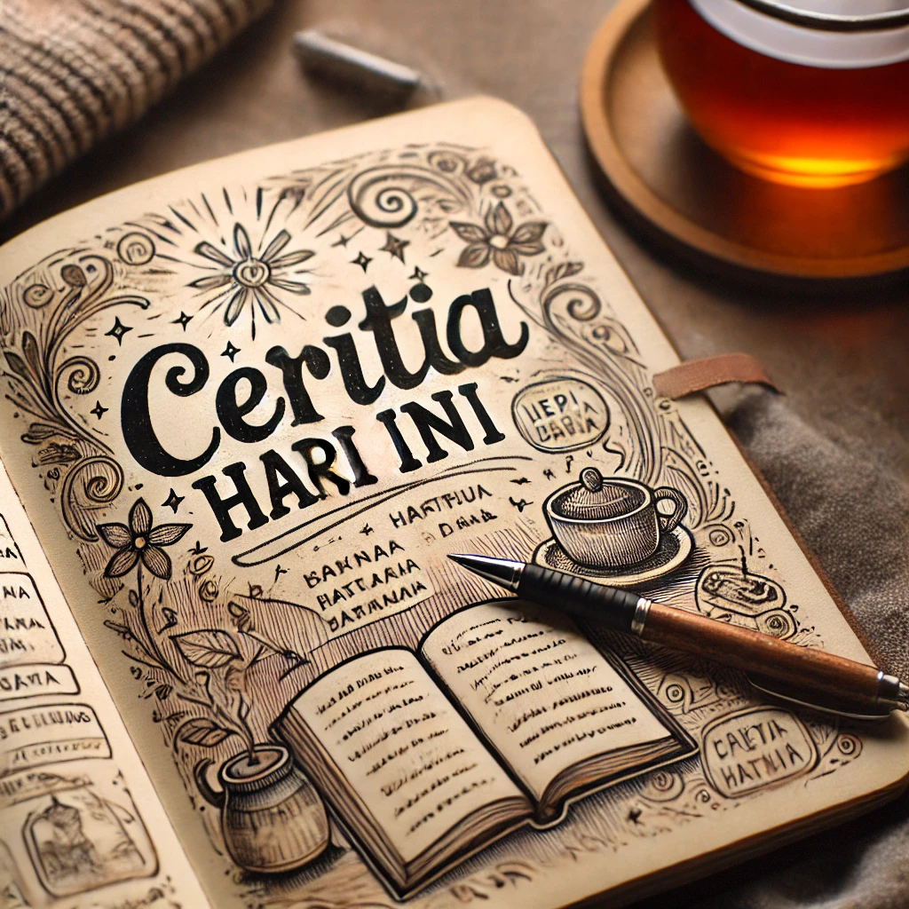

Kamis, 27 Februari 2025

Saya sangat suka dengan hal-hal seperti menulis, membaca, atau apa pun yang bisa membuat sesuatu terlihat menarik. Jika suasana hati saya tidak kondusif, saya menuangkannya ke dalam tulisan yang menjadi sebuah karya di aplikasi KBM. Mau itu marah, sedih, atau bahkan bahagia, saya selalu menulis hal-hal yang membuat saya terhibur. Bahkan, curhat dari teman pun saya jadikan tulisan, tetapi tanpa mencantumkan nama.
Jangan lupa baca ya!
Saya sedang menempuh pendidikan di Universitas Sanata Dharma dengan jurusan Informatika dan ikut berbagai kegiatan organisasi serta kepanitiaan. Saya memilih jurusan ini karena selain prospek kerjanya luas, saya juga ingin tahu lebih dalam tentang dunia IT. Ya meskipun saya capek, ya mau gimana lagi, harus banyak belajar dan mencari tahu untuk ke depannya juga.
| No | Kegiatan |
|---|---|
| 1 | DPMU (Dewan Perwakilan Mahasiswa Universitas) |
| 2 | PORSI (Pekan Olahraga dan Seni Informatika) |
| 3 | Pelepasan Wisuda |
| 4 | Techno Fest |
| 5 | Festival Sekar Geni |
| 6 | Pengabdian Masyarakat bersama dosen di Gereja Hati Kudus Banteng dan Gunung Kidul |
Saya senang mengikuti perkuliahan ini karena disini saya banyak belajar hal yang baru.